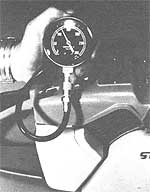
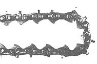

Safety, Selection, Milling, and More!
Stopping By Woods.
Chain Saw
Chain Saw Lumber Mill
Chain Saw Mini-Mills
Chain Saw Skills
Shopping for, buying, maintaining, and using the woodcutter's friend all require basic ...
If you read THE Mother Earth News, chances are that you either use wood as a fuel already, or are trying to get into a situation where you can. In either case, you should be thinking about cutting wood and woodcutting tools right about now, with fall already in the air and winter just around the bend. And that means chain saws.
Of course, you could cut your wood by hand, as I did for several years while I was living in a tepee. But the only really practical approach to stockpiling a winter's supply of firewood is to use a chain saw.
The chain saw is fast and efficient. I can leave my house in the morning and be back home in time for lunch ...with a cord of pinon in the back of the truck (we westerners don't have the ready access to the good hardwoods that folks in the East enjoy). That load of wood costs me only a gallon of two-cycle oil/gas mix and a quart of chainand-bar oil for the saw. And that morning's cutting will provide me with cooking and heating wood for a month, or around $100 in cash if I sell it ...which I usually do, since woodcutting is how I make most of my living.
The remainder of my income comes from the small chain saw repair shop out behind my house, where I work on saws when the snow's too deep or the weather's too ugly to head out into the woods. Most of the tools I repair are similar in size to the ones I own and use as a professional firewood cutter-the mid-sizers of 50 to 60 cubic centimeters or so (3.0 to 3.5 cubic inches, with 1 cubic inch equaling approximately 1 horsepower).
No matter what size saw you may already own or may be considering buying soon, you should expect the same service from it that I do from mine: It should cut wood all day long without giving a speck of trouble. I have learned to hate being stranded out in the woods, miles from home, with only half a load of wood cut and a saw that won't run. In fact, I won't stand for it. Which brings me to you.
If you're shopping for a new chain saw and you have plenty of money, this article probably isn't for you; just go out and buy whatever you want. But if, as with most of us, your financial situation is delicate and you need to get the best deal you possibly can, then there are several options to consider, and I think I can help you. Likewise, if you already own a good saw and know how to maintain it and keep it running, then you need read no further. On the other hand, if you own a funky old saw that tends to be cantankerous, stick around awhile.
Buying A Used Chain Saw: Here are a few things to check for when looking at used chain saws.
*General appearance. Does the saw appear to have been wellmaintainedor does it look like a survivor of World War II? Check for cracks in the case, bent hand-hold bars and chain brakes, missing bolts and screws, and other obvious signs of hard use and neglect. A clean saw doesn't necessarily mean a good saw ...but a saw that's gurney on the outside probably isn't in any better shape on the inside. * Wear. Make a thorough visual inspection of the chain, the guide bar, and the drive sprocket. Grasp the chain between your thumb and forefinger and wiggle it back and forth across the bar. There should be some play in the links, but not an excessive amount. This test, along with a close look at the tie straps in the chain and a visual check for bar wear, will give you a pretty good idea of how much life is left in these two high-wear components.
The cutting teeth on the chain should be uniformly filed. That is, the left-facing teeth should be the same size, and filed at the same angles, as the right-facing teeth. If the cutters (the actual cutting "teeth" of the chain) are filed way back, then you'll need to buy a new chain soon. And don't forget to check the drive teeth (these projections are on the opposite side of the chain from the cutters and run inside the groove in the guide bar); chipped, broken, or worn drive teeth will wear the bar and sprocket out in a hurry.
Remove the bar and chain from the saw and look at the drive sprocket. If the sprocket is showing signs of age and abuse, you should discount the value of the saw accordingly. The chain, bar, and sprocket usually wear together, and therefore must usually be replaced together ...you can spend a bundle of bucks for the trio. A new bar, chain, and sprocket, on the other hand, should be good for two to three years of average firewood cutting for the nonprofessional, if they're properly used and maintained.
*Automatic chain-and-bar oiler. A manual oiler is thumb-operated. and you need only to pump it a few times to determine whether it's working. But most newer saws are equipped with automatic oilers, which are usually handy, trouble-free devices. In fact, dirt or sawdust in the oiler is the cause of most automatic oiler problems. But if the oiler isn't working-or if it goes on the blink while you're cutting-it could ruin a chain and bar before you know it. Therefore, the automatic oiler is worth the little trouble it takes to check it out before buying a used saw. Like so ...
With the bar and chain still off the saw from the previous inspection of the sprocket, start the tool up. (Don't worry, this won't hurt a thing.) With the saw at an idle, a steady drip of oil should be visible, increasing to a pulsating stream as you increase the saw's RPM. Intermittent air bubbles in the oil flow indicate a leak in the oiling system and point to the possibility of an impending pump failure. If the saw doesn't pump oil, or doesn't pump enough oil, use a small screwdriver to turn the oiler adjusting screw counterclockwise. If things are working properly, the flow of oil will increase in proportion to the extent you turn the adjusting screw.
A saw that won't oil is no saw at all. Though most automatic oiler problems are relatively easy and inexpensive to fix, that cost and effort should be taken into account when haggling over the purchase price ...or you might want to insist that the owner make the repairs before you buy.
*Engine. How easily does the engine start? When the saw is cold and the choke is on, the powerhead should fire in four or five cranks. Then push the choke off; the engine should start with a few more pulls. Let the saw warm up thoroughly, then shut it off for a minute or two. It should restart easily.
Now shut the saw down again and remove the spark plug. The plug should be relatively clean and light brown to chocolate brown in color. If the plug's coated with a greasy-looking residue, it's all indication of too much two-cycle oil being used in the gasoline . . but it's nothing to worry about; a new spark plug and the correct gas/oil mix should solve the problem.
Next, insert a compression gauge into the spark plug hole and pull the starter cord five or six times. You should forget about buying any saw that doesn't have at least 100 pounds of compression, with 120 pounds or more being preferable. The compression check is one of the most important considerations when shopping for a used chain saw, so don't skip it.
And finally, cut some wood with it.'
If the compression is good; if the saw starts, idles smoothly, rum, oils, and cuts well; and if the bar, chain, and sprocket are in good condition-then chances are you've found a good used saw. Price? That part's up to you. Check the going price for a comparable new saw, and find out, if you can, what the one you're looking at cost originally. In the final reckoning, a "fair" price is whatever the seller and the buyer can agree upon and be happy with ...assuming both parties are being honest, of course. (And wouldn't it be wonderful if we lived in a world where we could safely make assumptions like that!)
One final tip about shopping for a used saw: Try to get an owner's manual, complete with a parts diagram. And think about availability of parts before you buy. If the saw is old or off-brand, you may have trouble getting repair parts or even finding someone willing and able to work on it.
Buying A Rebuilt Chain Saw: I rebuild and sell a lot of used chain saws (about 30 last year). I guarantee the saws and generally send them out with new bars, chains, and sprockets. I sell them for a fair price, and I've never had one come back for anything major. (They do come back sometimes, of course, but it never seems to take much to fix them.)
The moral here should be plain: If you can find a rebuilt saw that fits your needs, and the price is fair, and you know and trust the person who did the work, it's probably the very best way of all to buy a good saw that you can depend on, at a good price. Here again, try to get an owner's manual that includes a parts diagram ...and don't hesitate to inspect the saw as described above. And cut some wood with it!
Buying A New Chain Saw: I am no different from most folks. I love to take a bright, shiny new saw right out of the box and fit the bar and chain onto it. It's a new toy. But new saws are expensive, and buying one should be treated as seriously as making any other major purchase.
I happen to prefer the European-made saws. But I hasten to add that a preference in a chain saw is just that ...a preference. I have found that the automatic oilers, vibration isolation, quietness, safety features, and overall design of the European saws generally surpass those of saws manufactured elsewhere. But American saws are getting better all the time, and, once again, you should buy whatever brand of saw suits you and your specific needs. I know people who own almost any brand of saw that you could name, and most of them swear by whatever kind of saw they have ...or they get rid of it pretty quick. The best thing you can do is to read the chain saw liter ature, talk to owners-both professionals and once-a-year firewood cutters-talk to an unbiased chain saw repairperson (that is, one who doesn't deal in a certain brand) ...then make your choice, pay your money, and learn how to protect your investment.
Whether you purchase a used, rebuilt, or new saw, the very first thing you should do once you get your new tool home is to read the owner's manual. Study that little book! The manual will tell you most everything you'll ever need to know about the care and Maintenance of your saw.
Get used to the idea that chains dull fast and must be kept sharp to prevent premature chain, bar, and sprocket wear. If you're wellheeled, purchase an extra chain so that you'll have one to work with while the other's in the shop being professionally sharpened. Otherwise, learn how to sharpen chain-saw chain yourself. Either way, keep that chain sharp!
Almost all modern saws have a centrifugal clutch, which is composed of a clutch drum riding on a sprocket. The clutch system spins on "caged roller bearings," which have to absorb all those RPM. Consequently, the clutch bearings need periodic applications of grease ...like when you first get the saw, and about every 20 hours of use thereafter.
Sprocket-nosed and roller-nosed guide bars also need to be greased regularly. Use a standard grease gun to lube the nose bearings before each day of woodcutting. And if you really want to do it right, you can buy a needle-nosed fitting for your gun that will enable you
to shoot the lube into the bearings, rather than just onto them. If you happen to own one of those needle-nosed chain saw oilers that use 90-weight oil instead of grease, keep in mind that because oil is thinner than grease, it burns and slings of fasterand thus needs to be replenished more often.
Keep in mind, also, the machinist's adage "Oil is cheaper than steel!" Use plenty of oil on the bar (by adjusting the automatic oiler, or by giving your thumb a good workout if you have a manual oiler), and keep an eye on the pump to make sure it hasn't shut down right in the middle of a day's woodcutting.
In order to better appreciate the importance of proper oiling, let's look at this chain/oil/bar relationship a bit closer. The chain rides around the bar on a thin coat of oil that keeps the bar and chain from running metal-on-metal. If the saw isn't oiling, or not oiling enough, then the metal-on-metal friction will produce heat, which in turn will damage the chain, bar, and sprocket ...and the drag of friction will overheat the engine and possibly damage it, too.
And just how do you tell if your pump is providing enough oil to prevent damage? Well, where there's smoke, there's heat. If you notice the bar and chain smoking and you're having to force the saw to cut, then you should take the hint that things are getting hot down there. Another clue to overheating is a loose chain. And a loose chain is another major cause of premature guide bar wear. What to do? Shut the saw of and allow it to cool until you can hold your ungloved hand on the bar for at least ten seconds. Then give the chain a good oiling from a spout oil can, and tighten it before restarting the saw ...and don't put chain to wood again until vou've de termined whether or not your oiler is working the way it shoul,!
One of the easiest-and most frequently overlooked-maintenan, ; tasks is simply keeping your saw clean. After each day's cuttit you should make sure-that you give the tool a thorough cleanir,; sharpen the chain, and deburr the guide bar before considering y work done.
A dirty and partially clogged air filter is the cause of many an (;: gine malfunction, most of which could easily be avoided by siml·'% removing the filter and tapping the accumulated dust of after ea, (t day's use. If you have access to compressed air, use it occasiona!k to blast your saw's filter clean.
Since all chain saws are air-cooled, it's necessary to keep the c!t gine's cooling fins clean. (Dirt and grease act as insulation that !: hold the engine's heat in.) You should scrape the cooling fins wi!, a pocketknife to remove any crusted-on grime and, if possible, bl;!,,! them out with compressed air A cool-running saw is a healthy sa :%,
To avoid all sorts of troubles, be certain that you're using the co! rect gasoline/oil mix in the fuel tank. Most saws have the oil/gas t .! do printed on them in a conspicuous location. If not, the owner manual will contain this vital information. Some older saws will cept any good-quality 30-weight motor oil in the gas/oil mix, but mo~t newer machines demand specially blended two-cycle oils. Commot. gas-to-oil ratios run from 16:1 (16 parts gasoline to one part oil) all the way up to 100:1. Too rich a mixture will cause your saw to smok~ and run poorly, while an excessively lean mixture can burn an c!. gine up in nothing flat.
When mixing your fuel, you need to use exact measures. (For cvample, a 16:1 mix requires 1/2 pint of oil in a gallon of gas.) Shake the mixture well after pouring the two ingredients together ...and shake it again each time you refuel your saw. In order to insure cle;tn fuel going into your saw, use a filtered funnel when pouring the nu\ from the can into the saw's tank. (You can buy specially designed chain saw gas cans with built-in filtering funnels in their pour spouts i
You could use the cheapest old motor oil you can find for chai!tand-bar oil, though it does tend to sling off and therefore to do an inferior job of lubricating and cooling. It's better either to buy commercial chain-and-bar oil or to use antisling additives to beef up standard motor oil.
When you're ready to head for the woods for a day of woodcutting, take along more of everything than you think you'll need. It . a stone drag to have to come home with a short load of wood in the bed of the truck just because you didn't take along enough gas and oil, bar oil, or some minor tool you found you couldn't do without (like the open-end wrench and standard screwdriver required to adjust the chain on most saws). I carry my tools in a small army ammo can, and pack along a gallon of gas mixture and two quarts of bac oil for every cord of wood I plan to cut.
I've cut wood in a lot ohdangerous situations over the vicars, hui I've never cut myself or anyone else. To my mind, the most important chain saw skill of all is concentration. Never take your mind of that saw: That potentially vicious chain is buzzing hungrily at some 3,000 feet a minute. Your attention must always be where the chain is, and especially where the nose of the bar is.
In short, you-the operator-are the best chain saw safety devt~c ever invented, and if you're careful, you won't get hurt. (If you ever have the misfortune of seeing a chain saw injury, you'll never again need to be reminded to wear the proper clothing and safety accoutrcments, and to keep your eyes on your work.)
Whether shopping for a chain saw, or giving this wonderful outdoor power tool the care it demands, or actually cutting up a lon:: winter's supply of wood, the same two qualities will insure excellent results: [ 1 ] concentration on what you're doing, and [2 1 willingness-no, a commitment-to take the time to do it right. Take care of those two details, and you can be assured of years of safe, enjoyable, labor-and timesaving fun (you bet it can be fun!) with your chain saw.
|
When shopping for a used or rebuilt chain saw probably the must Im portant check you can make is a compression test. Look for a minimum of 100 pounds of compression, with 120 pounds or more indicating an engine with plenty of life left in it. Don't overlook this test! |
 Inspect the chain for general condition, tightness of links, and wear on the cutting teeth. (This chain needs to be retired from the service.) |
 |